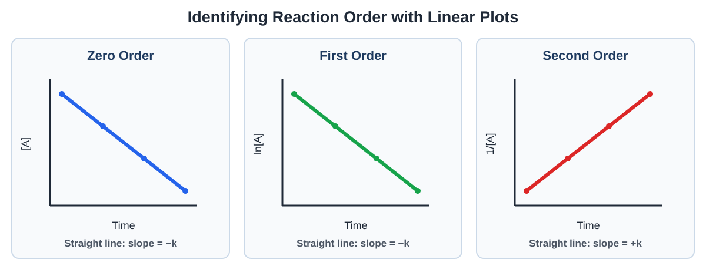
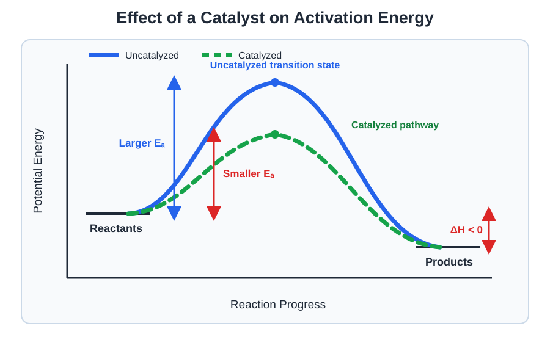
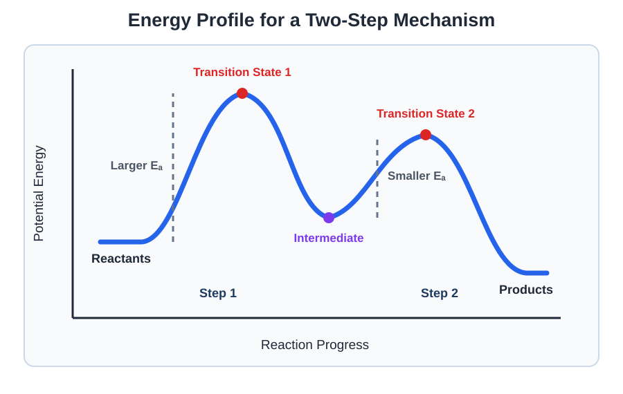

Kinetics
Study the speed of chemical reactions and examine how concentration, temperature, reaction pathways, and catalysts affect reaction rate.
Topics
Reaction Rates and Rate Laws
Learn how reaction rates are measured and use experimental data to determine rate laws, reaction orders, and rate constants.
Concentration and Time
Analyze zero-, first-, and second-order reactions using integrated rate laws, half-life calculations, and concentration-versus-time graphs.
Collision Theory and Mechanisms
Explore activation energy, molecular collisions, reaction mechanisms, energy diagrams, and catalysts.
Reaction Rates and Rate Laws
Chemical kinetics is the study of how quickly reactions occur. A reaction rate describes how the concentration of a reactant or product changes over a period of time.
Measuring Reaction Rate
As a reaction proceeds, reactant concentrations usually decrease while product concentrations increase.
The Greek letter delta, Δ, means “change in.” Therefore, Δ[A] represents the change in the concentration of substance A.
Products: Their concentrations increase, so their rates are positive.
Example: Calculating an Average Rate
The concentration of reactant A decreases from 0.800 M to 0.620 M over a period of 30.0 seconds. Calculate the average rate at which A disappears.
The negative sign in the formula changes the negative concentration change into a positive rate.
Stoichiometry and Reaction Rate
The coefficients in a balanced equation relate the rates at which reactants disappear and products appear.
Consider the general reaction:
Dividing by each substance’s coefficient produces one consistent rate for the entire reaction.
Example: Relating Formation Rates
Suppose O2 forms at a rate of 0.015 M/s. At what rate does NO2 form?
Four moles of NO2 form for every one mole of O2 that forms.
Rate Laws
A rate law describes how the reaction rate depends on the concentrations of its reactants.
For a reaction involving reactants A and B, a rate law may be:
In this expression:
- k is the rate constant.
- [A] and [B] are molar concentrations.
- m is the reaction order with respect to A.
- n is the reaction order with respect to B.
- m + n is the overall reaction order.
Understanding Reaction Order
Reaction order tells us how changing a reactant’s concentration changes the reaction rate.
| Order in a Reactant | When Its Concentration Doubles | Effect on Rate |
|---|---|---|
| Zero order | 20 | Rate does not change |
| First order | 21 | Rate doubles |
| Second order | 22 | Rate quadruples |
Determining a Rate Law from Data
To determine a reaction order, compare two experiments in which only one reactant concentration changes. Then observe how the initial rate changes.
Example: Method of Initial Rates
The following experimental data were collected for a reaction involving A and B.
| Experiment | [A] (M) | [B] (M) | Initial Rate (M/s) |
|---|---|---|---|
| 1 | 0.100 | 0.100 | 0.0200 |
| 2 | 0.200 | 0.100 | 0.0800 |
| 3 | 0.100 | 0.200 | 0.0400 |
Begin with the general form:
Determine the Order in A
Compare Experiments 1 and 2. The concentration of B remains constant. The concentration of A doubles, while the rate increases by a factor of four.
The reaction is second order in A.
Determine the Order in B
Compare Experiments 1 and 3. The concentration of A remains constant. The concentration of B doubles, and the rate also doubles.
The reaction is first order in B.
The experimental rate law is therefore:
The overall reaction order is 2 + 1, so the reaction is third order overall.
Calculating the Rate Constant
Once the rate law is known, data from any experiment can be substituted into it to determine the rate constant, k.
Using Experiment 1:
Rate Law Versus Balanced Equation
A balanced equation describes the overall amounts of substances consumed and produced. A rate law describes how the measured reaction rate depends on concentration.
Because an overall reaction may occur through several smaller steps, its balanced coefficients do not necessarily equal the exponents in its rate law.
Practice Questions
Question 1: Calculating Average Rate
The concentration of reactant B decreases from 0.900 M to 0.660 M during a period of 40.0 seconds.
Calculate the average rate at which B disappears.
Show solution
Because B is a reactant, include a negative sign in the rate expression.
B disappears at an average rate of 0.00600 M/s.
Question 2: Relating Reaction Rates
Consider the reaction:
If A disappears at a rate of 0.020 M/s, at what rate does B form?
Show solution
The balanced equation shows that three moles of B form for every two moles of A consumed.
B forms at a rate of 0.030 M/s.
Question 3: Determining a Rate Law
The following data were collected for a reaction involving reactants A and B.
| Experiment | [A] (M) | [B] (M) | Initial Rate (M/s) |
|---|---|---|---|
| 1 | 0.100 | 0.100 | 0.00600 |
| 2 | 0.200 | 0.100 | 0.0120 |
| 3 | 0.100 | 0.300 | 0.0540 |
Determine the order in A, the order in B, and the complete rate law.
Show solution
Compare Experiments 1 and 2. The concentration of A doubles while B remains constant. The rate also doubles.
The reaction is first order in A.
Compare Experiments 1 and 3. The concentration of B triples while A remains constant. The rate increases by a factor of nine.
The reaction is second order in B.
The complete rate law is:
The overall reaction order is 1 + 2, so the reaction is third order overall.
Question 4: Calculating the Rate Constant
Using the data and rate law from Question 3, calculate the rate constant, k.
Show solution
Use the rate law and the values from Experiment 1.
The rate constant is 6.00 M−2s−1.
Question 5: Predicting a Change in Rate
A reaction has the following rate law:
What happens to the reaction rate if [A] is doubled while [B] is reduced to one-half of its original value?
Show solution
Doubling [A] changes the rate by a factor of:
Reducing [B] to one-half changes the rate by:
Multiply the two effects:
The new rate is one-half of the original rate.
Question 6: Interpreting Zero Order
A reaction is zero order in reactant C. The concentration of C is increased from 0.150 M to 0.600 M while all other conditions remain constant.
How will this change affect the reaction rate?
Show solution
Because the reaction is zero order in C, its rate law contains [C]0.
Changing the concentration of C therefore has no effect on the reaction rate.
Watch: Determining a Rate Law
Watch a worked example showing how experimental data can be used to determine reaction orders, the rate law, and the rate constant.
Concentration and Time
An integrated rate law relates reactant concentration to time. It can be used to calculate a concentration, determine a rate constant, or identify the order of a reaction from a graph.
Zero-Order Reactions
A zero-order reaction has a rate that does not depend on the concentration of reactant A.
The integrated zero-order rate law is:
This equation has the same general form as the equation of a straight line:
A graph of [A] versus time is linear for a zero-order reaction.
- The vertical axis is [A].
- The horizontal axis is time.
- The slope equals −k.
- The vertical intercept equals [A]0.
The half-life of a zero-order reaction depends on the initial concentration.
First-Order Reactions
In a first-order reaction, the rate is directly proportional to the concentration of one reactant.
The integrated first-order rate law is:
The abbreviation ln represents the natural logarithm. A graph of ln[A] versus time is linear for a first-order reaction.
- The vertical axis is ln[A].
- The horizontal axis is time.
- The slope equals −k.
- The vertical intercept equals ln[A]0.
Second-Order Reactions
In a second-order reaction involving one reactant, the rate depends on the square of that reactant’s concentration.
The integrated second-order rate law is:
A graph of 1/[A] versus time is linear for a second-order reaction.
- The vertical axis is 1/[A].
- The horizontal axis is time.
- The slope equals +k.
- The vertical intercept equals 1/[A]0.
The half-life of a second-order reaction depends on the initial concentration.
Identifying Reaction Order from a Graph

| Reaction Order | Linear Plot | Slope | Rate Law |
|---|---|---|---|
| Zero order | [A] versus time | −k | Rate = k |
| First order | ln[A] versus time | −k | Rate = k[A] |
| Second order | 1/[A] versus time | +k | Rate = k[A]2 |
Using the Slope to Find the Rate Constant
After identifying which graph is linear, the rate constant can be determined from its slope.
For a second-order plot, slope = +k.
Example: Determining Order and Rate Constant
A graph of ln[A] versus time produces a straight line with a slope of −0.0350 s−1.
Because ln[A] versus time is linear, the reaction is first order.
Using a First-Order Half-Life
Example: Calculating Half-Life
A first-order reaction has a rate constant of 0.0231 s−1. Calculate its half-life.
The concentration of the reactant is reduced to one-half of its previous value every 30.0 seconds.
Practice Questions
Question 1: Identifying Reaction Order
A student creates three graphs using concentration data from a reaction. Only the graph of ln[A] versus time produces a straight line.
What is the reaction order? If the line has a slope of −0.0250 s−1, what is the rate constant?
Show solution
A linear graph of ln[A] versus time identifies a first-order reaction.
For a first-order linear plot:
Question 2: Zero-Order Concentration
A zero-order reaction has an initial reactant concentration of 0.800 M and a rate constant of 0.0150 M/s.
What is the reactant concentration after 20.0 seconds?
Show solution
Use the zero-order integrated rate law:
The concentration after 20.0 seconds is 0.500 M.
Question 3: First-Order Half-Life
A first-order reaction has a rate constant of 0.0347 s−1. Calculate the reaction’s half-life.
Show solution
Use the first-order half-life equation:
The reaction’s half-life is 20.0 seconds.
Question 4: Concentration after Several Half-Lives
A first-order reaction begins with a reactant concentration of 0.640 M. What concentration remains after three half-lives?
Show solution
During each half-life, the concentration is reduced to one-half of its previous value.
After three half-lives, the concentration is 0.0800 M.
This is also one-eighth of the initial concentration:
Question 5: Second-Order Concentration
A reaction is second order in A. Its initial concentration is 0.200 M, and its rate constant is 0.500 M−1s−1.
Calculate the concentration of A after 30.0 seconds.
Show solution
Use the second-order integrated rate law:
After 30.0 seconds, the concentration is 0.0500 M.
Question 6: Evaluating Linear Plots
A student obtains the following values after creating three linear regressions from experimental data:
| Plot | R2 Value |
|---|---|
| [A] versus time | 0.914 |
| ln[A] versus time | 0.999 |
| 1/[A] versus time | 0.951 |
Which reaction order is best supported by the data?
Show solution
An R2 value closest to 1 indicates that the data most closely form a straight line.
The ln[A] versus time plot has an R2 value of 0.999, which is closest to 1. Therefore, the reaction is best classified as first order.
Watch: Integrated Rate Laws
Watch a worked example showing how graphs, slopes, integrated rate laws, and half-life can be used to analyze concentration over time.
Collision Theory and Reaction Mechanisms
For a chemical reaction to occur, reactant particles must collide. However, not every collision successfully produces products.
Collision Theory
According to collision theory, a collision results in a reaction only if the particles collide with enough energy and with an effective orientation.
1. Enough energy to overcome the activation energy
2. An orientation that allows the necessary bonds to break and form
A collision that does not meet both conditions will not produce a reaction.
Factors That Affect Reaction Rate
| Change | Why the Reaction Rate Usually Increases |
|---|---|
| Increasing reactant concentration | More reactant particles occupy the same volume, causing collisions to occur more frequently. |
| Increasing gas pressure | Gas particles are forced closer together, increasing collision frequency. |
| Increasing temperature | Particles move faster, collide more frequently, and a greater fraction of collisions have enough energy to react. |
| Increasing a solid’s surface area | More particles are exposed and available for collisions. |
| Adding a catalyst | The catalyst provides an alternative reaction pathway with a lower activation energy. |
Activation Energy
Activation energy, written as Ea, is the minimum energy that reacting particles must possess for a collision to result in a reaction.
During a successful collision, the particles briefly form a high-energy arrangement called the transition state, or activated complex.

Reading an Energy Profile
An energy-profile diagram shows potential energy as a reaction proceeds from reactants to products.
- The difference between the reactant energy and the top of the pathway is the forward activation energy.
- The highest point represents the transition state.
- The difference between product and reactant energy is ΔH for the reaction.
- A lower-energy pathway represents a catalyzed reaction.
If the products are higher in energy than the reactants, ΔH is positive and the reaction is endothermic.
Temperature and Reaction Rate
Increasing temperature increases the average kinetic energy of the particles. The particles move faster, so collisions occur more frequently.
More importantly, a greater fraction of the particles have energies equal to or greater than the activation energy. Therefore, a greater percentage of collisions successfully form products.
Catalysts
A catalyst increases the rate of a reaction by providing an alternative pathway with a lower activation energy. A catalyst participates in the reaction mechanism but is regenerated and is not consumed by the overall reaction.
• Lowers the activation energy
• Increases both forward and reverse reaction rates
• Does not change ΔH
• Does not change the equilibrium constant
• Does not change the equilibrium amounts of reactants and products
Reaction Mechanisms
A reaction mechanism is a proposed sequence of elementary steps that explains how an overall reaction occurs.
An elementary step represents a single molecular event. When all elementary steps are added together, they must produce the overall balanced reaction.
1. Add together to produce the correct overall reaction
2. Be consistent with the experimentally determined rate law
Molecularity of Elementary Steps
| Molecularity | Description | General Example |
|---|---|---|
| Unimolecular | One reactant particle is involved. | A → products |
| Bimolecular | Two reactant particles collide. | A + B → products |
| Termolecular | Three reactant particles collide simultaneously. | A + B + C → products |
Termolecular elementary steps are uncommon because three particles must collide at the same moment with the required energy and orientation.
Intermediates
An intermediate is produced during one elementary step and consumed during a later step. It does not appear in the overall reaction.
Example: A Two-Step Reaction Mechanism
Consider the following proposed mechanism:
Add the two steps and cancel F because it is produced in Step 1 and consumed in Step 2.
F is an intermediate because it is formed and then consumed. It does not appear in the overall reaction.
The Rate-Determining Step
The slowest elementary step in a mechanism is commonly called the rate-determining step because it limits how quickly the overall reaction can proceed.
For an elementary step, the rate-law exponents can be taken directly from the coefficients of the reactants in that step.
For the slow first step in the previous mechanism:
Energy Profiles for Multistep Mechanisms
A multistep reaction produces an energy profile containing multiple peaks and valleys.
- Each peak represents a transition state.
- Each valley between peaks represents an intermediate.
- Each peak corresponds to one elementary step.
- The step with the largest activation-energy barrier is generally the slowest step.

Practice Questions
Question 1: Temperature and Reaction Rate
A reaction occurs much faster at 50°C than at 20°C. Explain this observation using collision theory.
Show solution
At the higher temperature, the reactant particles have greater average kinetic energy and move faster. This causes collisions to occur more frequently.
More importantly, a greater fraction of the collisions have enough energy to overcome the activation-energy barrier. Therefore, more collisions successfully produce products.
Increasing temperature does not reduce the activation energy.
Question 2: Reading an Energy Profile
An uncatalyzed reaction has the following energy values:
- Reactants: 40 kJ/mol
- Transition state: 110 kJ/mol
- Products: 15 kJ/mol
Calculate the forward activation energy, reverse activation energy, and ΔH.
Show solution
The forward activation energy is:
The reverse activation energy is:
The enthalpy change is:
Because ΔH is negative, the reaction is exothermic.
Question 3: Effect of a Catalyst
A catalyst is added to a reaction at constant temperature. State how the catalyst affects each of the following:
- Activation energy
- Reaction rate
- ΔH
- Equilibrium constant
Show solution
The catalyst provides a different reaction pathway with a lower activation energy. This causes the reaction rate to increase.
The catalyst does not change ΔH because the reactants and products still have the same energies.
The catalyst also does not change the equilibrium constant. It increases both the forward and reverse rates, allowing equilibrium to be reached more quickly.
Question 4: Analyzing a Mechanism
Consider the proposed mechanism:
Determine the overall reaction, identify the intermediate, and write the rate law predicted by the slow step.
Show solution
Add the elementary steps and cancel D because it is produced in Step 1 and consumed in Step 2.
The overall reaction is A + B + E → C + F.
D is the intermediate because it is formed and then consumed.
Because the first step is an elementary slow step, its reactant coefficients may be used in its rate law:
Question 5: Catalyst Versus Intermediate
Consider the proposed mechanism:
Identify the catalyst and intermediate, and write the overall reaction.
Show solution
Add the two steps and cancel X and AX.
X is consumed in Step 1 and regenerated in Step 2. Therefore, X is the catalyst.
AX is formed in Step 1 and consumed in Step 2. Therefore, AX is the intermediate.
Question 6: Multistep Energy Diagram
An energy-profile diagram contains three peaks and two valleys between the reactants and products.
How many elementary steps, transition states, and intermediates are represented?
Show solution
Each peak represents one transition state and one elementary step. Therefore, the mechanism contains:
- Three elementary steps
- Three transition states
- Two intermediates
The two valleys between the three peaks represent the two intermediates.
Watch: Collision Theory and Mechanisms
Watch an explanation of activation energy, catalysts, energy profiles, and multistep reaction mechanisms.